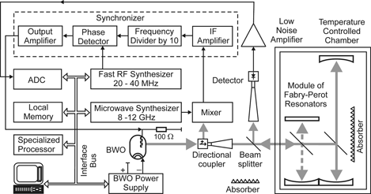
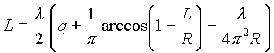
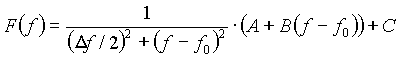
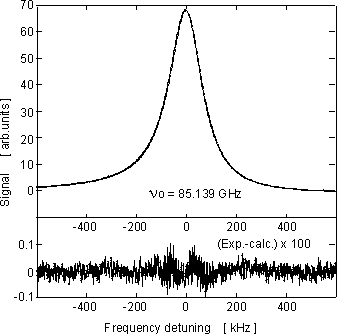
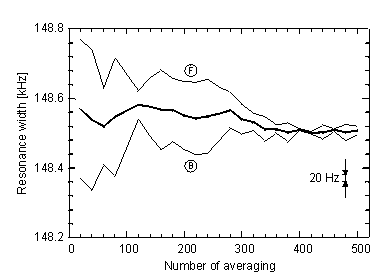

Instruments Resonator spectrometer Detailed description of the spectrometer Resonator spectrometer Detailed description of the spectrometer
Resonator spectrometer for atmospheric studies and absolute radiation absorption measurements in dielectrics
The block-diagram of the apparatus is
presented in Fig. 1. The Fabry-Perot resonator (Device 011) uses fundamental TEM (00q) mode,
where q is longitudinal mode number, i.e., number of halfwavelengths
between mirrors. The quality factor of Fabry-Perot resonator, 25-42 cm
long, spherical silver-plated mirrors 12 cm in diameter and 24 cm curvature
radius, coupled with source and detector by 6 micrometer teflon film, placed
45 degrees to the resonator axis, is determined by unavoidable reflection
losses (silver is the best reflecting material in millimeter wave range).

Fig. 1. Block - Diagram of the experimental setup of the resonator millimeter-wave spectrometer.
Radiation source is BWO with frequency controlled by PLL including slow MW and fast RF
reference synthesizers. The sensor is a high-Q Fabry-Perot resonator. The Schottky diode is the detector of the radiation passed through the resonator. Computer performs control of synthesizers, data acquisition and processing.
It is known that the width of the resonance can be
written as
D f = cPtotal / 2p L ,
where c is the light velocity in a substance, L is the
resonator length and Ptotal are total relative losses of
radiation energy during one traversing of the resonator. The length L is
defined in our case as

where l - wavelength in the substance,
R – mirrors radius of curvature, q - number of halfwavelengths
between mirrors.
Total losses in the Fabry-Perot cavity Ptotal
consist of:
Ptotal = Preflection +
Pcoupling + Pdiffraction + Patmosphere
,
and one needs some additional procedure to separate the loss to
be measured. Expressions for all the losses are known with higher or lower
accuracy: losses in the atmosphere filling the resonator can be calculated using
MPM program written by H. Liebe and its updates; diffraction coupling and
reflection losses can be calculated using expressions from classical books.
The synthesized frequency radiation source
is based on a Backward Wave Oscillator (BWO) which is stabilized by Phase Lock-in Loop
(PLL) with the use in this case of two reference synthesizers: one microwave (MW)
synthesizer (8-12 GHz), determining central frequency of the BWO and fast radio
frequency (RF) synthesizer (20-40 MHz) for precision fast scanning of the BWO
frequency around the chosen central frequency.
Radio frequency synthesizer provides
frequency scanning without loss of the phase of oscillations (without phase
jumps). Both synthesizers are computer-controlled. As a result, BWO frequency is
defined as
fBWO = n ·
fMW – 10 · fRF ,
where n varied from 4 to 20, and factor 10 before
fRF appears because phase detection is done at 10 times
digitally divided intermediate frequency (IF) which was 350 MHz. The main source
of error in measurement of the resonance width is the drift of the central
frequency of resonance during the measurement. To minimize this error
one has to measure the resonance curve as fast as physically possible. Response
time of the resonator itself t ~ 1/p D
f~2 microseconds. For precision measurement the
observation time should be increased, say, ten times, i.e., up to ~20
microseconds. Microwave and millimeter-wave synthesizers commonly used for
spectroscopy, employ indirect frequency synthesis and so have
~ 10 · 50 millisecond
switching time, thus preventing fast scanning of the resonance curve. Fast
direct radio frequency synthesizer with switching time ~200 nanoseconds and time
between switching 58 microseconds was used in this work as a source of reference
signal for phase detector in the lock-in loop. Thus precision and fast scanning
of the BWO radiation frequency within ~200 MHz around the central frequency
defined by microwave frequency synthesizer was achieved. Extension
of the scanning range up to the full BWO frequency range is possible [Ref.
2 (2006)]. Scanning
without
loss of phase permits the physical limits of the resonance observation time
to be approached and reduces the source phase noise. The passed through resonator radiation
was
received then by low-barrier Schottky diode detector. The precision frequency
control, signal acquisition and processing were done by computer as
it is shown
in Fig. 1 and will be explained below. Results of each scan were recorded
and
processed separately.
Automation system consisted of IBM PC and module containing RF
synthesizer and data acquisition system. For minimization of ground-to-ground
static the module is connected with PC by optically coupled interface. The core
of the module is microprocessor with external memory. RF synthesizer is based on
Direct Digital Synthesizer (DDS) microcircuit AD9850 of Analog Devices Inc. and
it is able to generate harmonic signal in 20-40 MHz range with 0.03 Hz
discreteness and without phase jumps at the switching. Data acquisition
(digitizing of preamplified detector signal) is done by 12-digits ADC. Data are
stored in a data memory. Microprocessor controls frequency of synthesizer and
synchronizes the data acquisition process with frequency steps. Parameters of
the synthesizer frequency tuning - starting frequency, value of frequency step,
time of the next frequency step, number of points, frequency change law and
number of scans - the microprocessor receives from PC. Time between frequency
changing was chosen for our purpose as 60 microseconds per point. Frequency was
changed by triangle law meaning forward and backward scan. Maximum number of
points per scan was 512. In each frequency point microprocessor several times
collects data from ADC, averages the obtained results and put the result of
averaging into data memory. In such a way 32 of 512 points triangle scans may be
put into local memory. The number of scans which could be put into local memory
increases proportionally with reducing the number of points per scan. So process
of registration of 32 scans with 512 points per scan takes 0.98 sec. After the
recording of ordered number of scans into local memory the data are transferred
to PC for further processing.
The processing consists of least squares fitting of the results
of each scan to Lorentzian with added linear (practice showed no necessity in
quadratic term) and constant terms representing effects of interference in the
tract in the vicinity of resonance, level of noise on detector and bias voltage
of amplifier:

As a result of the fit the width of the resonance
D f and position of the center
f0 are obtained. The time necessary for the fitting of one scan
depends primarily on the scan size and type of the PC processor. With
P120 processor and 1024-points scan this time varies from split second to
several seconds depending on the noise level. This time is defined for one
single scan without use of the results of the processing of previous scan. The
next scan processing time can be reduced down to some tens of milliseconds by
use of the previous scan processing result as initial fitting parameters. It is
clear that some of non-physical time losses can be reduced, e.g., just by the
change of the processor.
The basic procedure in resonator
spectroscopy is measurement of width of the resonance. The example of
experimentally observed resonant curve of the Fabry-Perot resonator at
85 GHz is presented in Fig.2.

Fig. 2. Resonance curve of Fabry-Perot resonator
record (500 centered scans). Residual of the fit to the Lorentzian curve
multiplied by 100 is presented below. Measured width of the resonance (FWHM) at
the frequency 85.139 GHz is equal to D f =
164 728 (20) Hz.
The curve is a combination of 500 scans with a duration
of 30 ms each, i.e., corresponds to the summary averaging time 15 s. Each fast scan
was processed separately, then resonant curves were combined so that their centers
coincided, and so was obtained the averaged curve in Fig. 2. Residual of the
fit, presented in the lower part of the figure indicates adequacy of the fitting model.
The increased noise on the line slopes corresponds to transformation of phase
noises of radiation into amplitude ones. The width of the resonance (FWHM) was
defined then as D f =
164 728 (20) Hz. Of course, to obtain only averaged value
of the width one can just average values of the widths obtained by processing
each scan.

Fig. 3. Convergence of measured width of the resonance curve of Fabry-Perot resonator with the number of measurements.
Results of forward (curve F) and backward (curve B) scans are presented separately, demonstrating existence of the fast drifts of the center resonance
frequency even at scan times as short as 30~ms. Average of back and forth scans is shown (medium curve).
In Fig. 3 some inside story of obtaining
the resonator width value by means of averaging each single scan processing
result is shown. The width is plotted vs. the number of averaged measurements: thin
curves depict results of only forward (F) and only backward (B)
frequency scans; thick curve depicts the mean value of these two. Every point
corresponds to twenty times averaged value of width obtained from processing of
30 ms duration single scans. The curves in Fig. 3 show not only
the effect of measurement accuracy increase with data accumulation - after 340
averaging the mean value of back and forth scans varies within 10 Hz - but also
the significance of the fast frequency scan introduced by us for faster
obtaining of the data as well as for lessening the measurement errors arising
from the resonance center frequency drift. The difference between width values
measured with opposite directions of the scan reaches 400 Hz due to the drift of
the center frequency of the resonance during the time of the scan even for scans
as fast as 30 milliseconds. The change from slower scans used earlier (10 s) to the
30 ms scan is in some sense equivalent to the change to modulation method (with
30 Hz modulation frequency) leaving behind most part of flicker type drifts
and perturbations.
The sensitivity of the spectrometer in
terms of the absorption coefficient determined from 20 Hz resonance width
measurement accuracy constitutes ~ 4 ·
10-9 cm-1 (or 1.8 · 10-3 dB/km).
For more details and the spectrometer
applications see the paper [Ref. 11 (2000)].
Examples of the spectrometer
use
for "in situ" observation of atmoshperic lines.
|